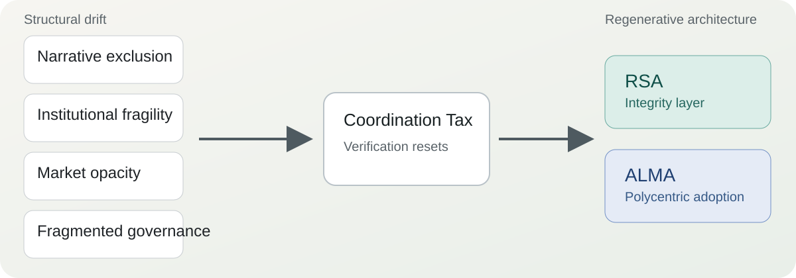
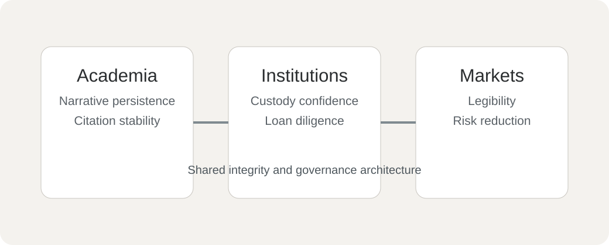

Narrative exclusion
Scholarly and curatorial attention thins over time, reducing interpretive continuity and long-term visibility.
Portal
Artist estates are long-horizon coordination systems. Cultural value does not persist by merit alone. Without durable verification and governance infrastructure, coherence decays.

Posthumous devaluation is structural.
The thesis identifies four recurring mechanisms that make devaluation a default outcome across estates.
Scholarly and curatorial attention thins over time, reducing interpretive continuity and long-term visibility.
Archives and custodial infrastructures remain discontinuous or under-resourced, weakening cultural memory.
Weak documentation and informal circulation increase uncertainty, which markets rationally discount.
Inconsistent authority and disputed authentication processes increase verification burden for everyone.
Cultural entropy names the directional drift toward fragmentation when coordination costs rise and no shared infrastructure absorbs them. Inaction is not neutral.
Long-horizon cultural systems lose coherence unless counter-entropic work is continuously maintained.
Verification costs escalate across scholars, institutions, insurers, and markets when trust must be reconstructed repeatedly.
Regenerative systems reinvest present action into future legibility so trust compounds instead of resetting.
RSA stabilizes provenance-relevant stewardship statements through append-only continuity.
ALMA diffuses shared procedures through multiple centers rather than centralizing authority.
Start with the abstract, definitions, and chapter highlights in an accessible rendering of the core argument.
Go to ThesisUnderstand the integrity layer: authority, identifiers, stewardship sequence, selective disclosure, and compounding trust.
Go to RSASee how adoption can scale through micro, meso, and macro layers without centralization.
Go to ALMAEntropy appears at interfaces. Architecture lowers verification cost so each domain can reuse trust rather than pay full reconstruction costs at every handoff.

Research coherence depends on stable references and attribution continuity.
Loans and exhibitions require reproducible authority and lower due-diligence friction.
Uncertainty is priced. Better integrity reduces discounting due to informational ambiguity.
The thesis is explicit: Trust must be encoded into process, not requested from persons. Continuity must survive succession, disagreement, and institutional turnover.
Why repeated verification becomes an invisible drain that compounds devaluation over time.
How a shielded public Layer 1 supports verifiability without forcing exposure.
The governance problem after integrity is solved: institutional adoption and diffusion.
Per the thesis text, ALMA is scheduled to publicly activate through an exhibition on July 4, 2026 at the Art Museum of the Americas (Washington, D.C.).